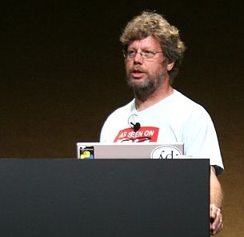
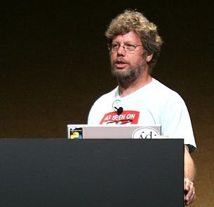

Python est un langage de programmation interprété. Pour les différences entre langage interprété et langage compilé, aller ici. Il est placé sous licence libre et fonctionne sur la plupart des plateformes informatiques.
Historique
A la fin des années 1980, Guido Van Rossum participe au développement d'un langage de programmation,
ABC, au
Centrum voor Wiskunde en Informatica d'Amsterdam. En 1989, il profite d'une semaine de vacances pour
écrire
la première version du langage. Il s'est principalement inspiré d'ABC. En février 1991 est publiée la
première version publique (0.9.0) sur le forum Usenet. Python est disponible au grand public.
En 1995, Van Rossum continue son travail sur Python au CNRI aux États-Unis, où il sort plusieurs
versions du logiciel. Python 2.1 fut une version dérivée de Python 1.6.1 et Python 2.0. Depuis la sortie
de
cette version, tout code, documentation et spécification ajouté est détenu par la Python Software
Foundation.
Caractéristiques
Python a été conçu pour être très lisible. Il possède moins de constructions syntaxiques que de nombreux autres langages, parmi lesquels le C. Les blocs sont identifiés par l'indentation : le début du bloc est signalé par une augmentation de l'indentation et la fin par une diminution d'indentation.

Python permet de programmer dans un style fonctionnel et dispose de compréhensions de listes.
Tous les types de base, les fonctions, les instances de classes et les classes elles-mêmes sont
des
objets. Les classes supportent l'héritage multiple.
Modèle objet
Les développeurs Python estiment qu'il suffit d'indiquer, par des conventions d'écriture, les parties publiques des interfaces et que c'est aux utilisateurs des objets de se conformer à ces conventions ou de prendre leurs responsabilités ; leur slogan par rapport à cela est "We're all consenting adults here" qui se traduit par "Nous sommes entre adultes consentants".
Bibliothèque standard
Python possède une grande bibliothèque standard. Le nombre de modules de la bibliothèque standard peut être augmenté avec des modules. La bibliothèque standard est bien conçue pour écrire des applications utilisant Internet. Des modules pour créer des interfaces graphiques et manipuler des expressions rationnelles sont également fournis.
Conventions de style
Guido Van Rossum a mis à disposition un guide appelé PEP 8. Il est toujours maintenu pour l'adapter aux évolutions du langage. Il existe aussi un texte appelé "Zen of Python" :